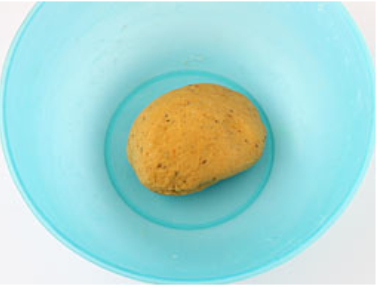
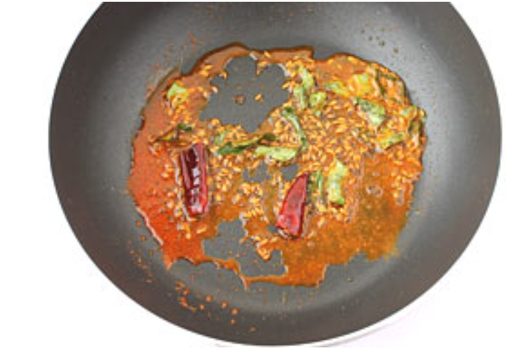
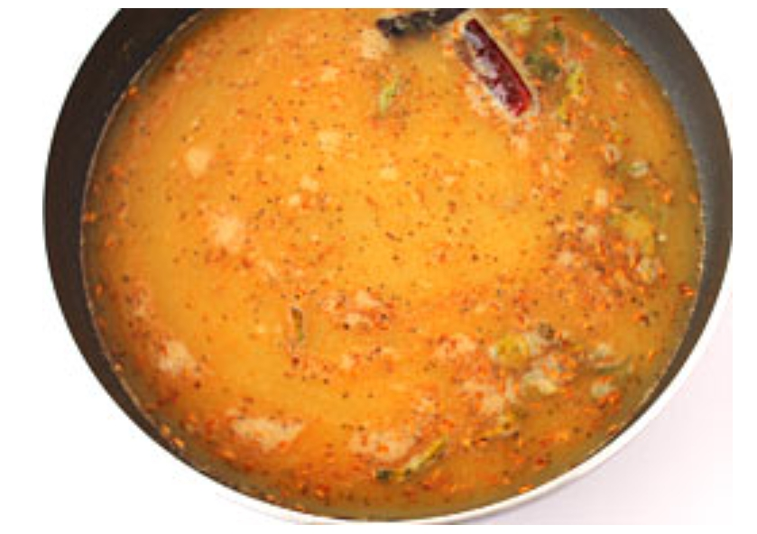
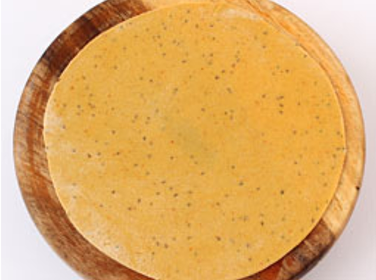
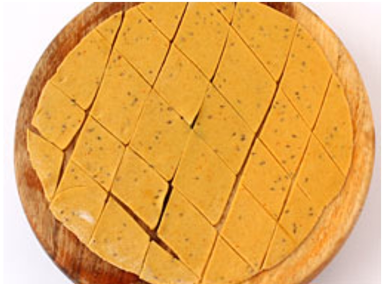
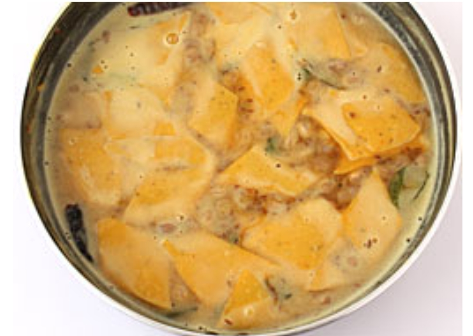
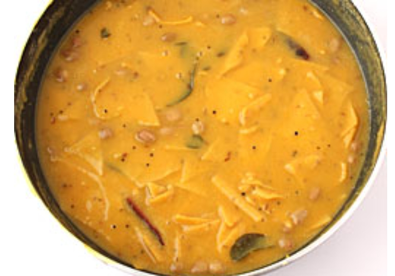

1. તુવેર દાળને પાણીથી ધોઈને એક ૩-૪ લીટરવાળા સ્ટીલ અથવા એલ્યુમિનિયમના પ્રેશર કૂકરમાં ૧&૧/૨ કપ
પાણી અને મીઠાની સાથે નાખોં. એક નાની વાટકીમાં મગફળી લો અને તેને કૂકરમાં દાળની ઉપર મૂકો. કૂકરનું ઢાંકણ
બંધ કરીને ૩ સીટી વાગે ત્યાં સુધી મધ્યમ આંચ પર દાળને બાફો. ત્યારબાદ ગેસને બંધ કરો અને કૂકરનું પ્રેશર
આપોઆપ નીકળી જાય ત્યાં સુધી લગભગ ૫-૭ મિનિટ માટે રહેવા દો.

2. જ્યારે દાળ બફાઈ રહી હોય, તે દરમિયાન ઢોકળી માટે લોટ બાંધી લો. એક પહોળા મોઢાવાળા વાસણમાં
૧/૨ કપ ઘઉંનો લોટ, બેસન, અજમો, ૧/૪ ટીસ્પૂન હળદર, ૧/૨ ટીસ્પૂન લાલ મરચું પાઉડર, ૧/૨ ટીસ્પૂન ધાણાજીરું,
૧ ટીસ્પૂન તેલ અને મીઠું લો. તેમાં થોડી-થોડી માત્રામાં પાણી નાખીને પરોઠાના લોટ જેવો મુલાયમ લોટ બાંધી
લો. તેને એક કપડાંથી ઢાંકીને લોટને ૧૦ મિનિટ માટે રહેવા દો.
4. દાળને એક મોટા બાઉલમાં કાઢો અથવા ફરી કૂકરમાં જ બ્લેન્ડરની મદદથી પીસી લો. તેમાં ૨ કપ પાણી
નાખીને ૫-૧૦ સેકંડ માટે દાળને ફરીથી પીસી લો.

5. એક મોટી કડાઈમાં ૨ ટીસ્પૂન તેલ ગરમ કરીને તેમાં રાઈ નાખોં. જ્યારે રાઈ ફૂટવા લાગે ત્યારે
તેમાં જીરું, હીંગ, સૂકું લાલ મરચું અને લીમડાના પાન નાખીને જીરાને સોનેરી થવા દો. તેમાં ૧/૪ ટીસ્પૂન
હળદર અને ૧/૨ ટીસ્પૂન લાલ મરચું પાઉડર નાખીને બરાબર મિક્ષ કરો.

6. તેમાં પીસેલી દાળ, ૧ કપ પાણી, બાફેલી મગફળી, લીંબુનો રસ, ખાંડ અને મીઠું નાખીને મધ્યમ આંચ પર
ઉકળવા દો. જ્યારે મિશ્રણ ઉકળવા લાગે ત્યારે આંચને ધીમી કરી દો અને ૫-૭ મિનિટ માટે ઉકાળો (પકાવો).

7. તે દરમિયાન લોટને ૪ સરખા ભાગોમાં વહેંચી તેના ગોળ લૂઆ બનાવો. એક થાળી અથવા બાઉલમાં અડધો કપ
જેટલો સૂકો ઘઉંનો લોટ લો. હવે એક લૂઓ લઈને તેને સૂકા ઘઉંના લોટથી લપેટો અને પાટલી-વેલણની મદદથી ૭-૮ ઇંચ
વ્યાસની પાતળી રોટલી વણો. આ જ રીતે બાકી વધેલા લૂઆની પણ રોટલી વણી લો.

8. એક રોટલીને પાટલી પર લઈને તેને ચાકૂ અથવા કટરની મદદથી નાના-નાના ચોરસ ટુકડાઓમાં કાપો. આ
ટુકડા ઢોકળીના નામથી ઓળખાય છે.

9. ત્યારબાદ આંચને મધ્યમ કરી દો અને ઢોકળીને (એકવારમાં ૧૨-૧૪ ટુકડા) ઉકળતી દાળમાં નાખીને ૧-૨
મિનિટ માટે પકાવો (ઉકાળો). ૧-૨ મિનિટ પછી બાકી વધેલી ઢોકળીમાંથી ૧૨-૧૪ ટુકડા નાખી દો. વચ્ચે-વચ્ચે
ચમચાથી હલાવતા રહો.

10. આ જ પ્રક્રિયાથી બાકી વધેલી રોટલીની ઢોકળી બનાવી લો અને દાળમાં નાખી દો. બધી ઢોકળીને દાળમાં
નાખ્યા પછી ત્યાં સુધી પકાવો જ્યાં સુધી ઢોકળી રંધાય (બફાય) ન જાય. તેમાં લગભગ ૮-૧૦ મિનિટ લાગશે.
વચ્ચે-વચ્ચે દાળને ચમચાથી હલાવવાનું ન ભુલશો.
11. ગેસ બંધ કરી દો. દાળ ઢોકળીને એક સર્વિંગ બાઉલમાં કાઢો અને તેને લીલા ધાણાથી સજાવીને ગરમા ગરમ પીરસો.